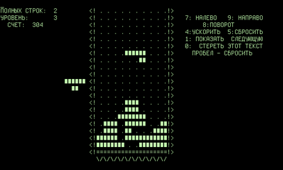
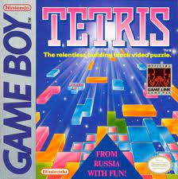
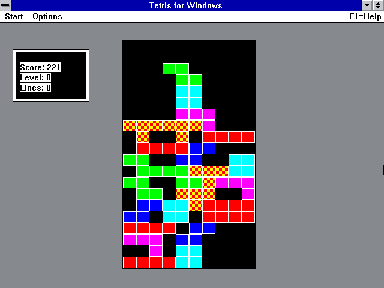
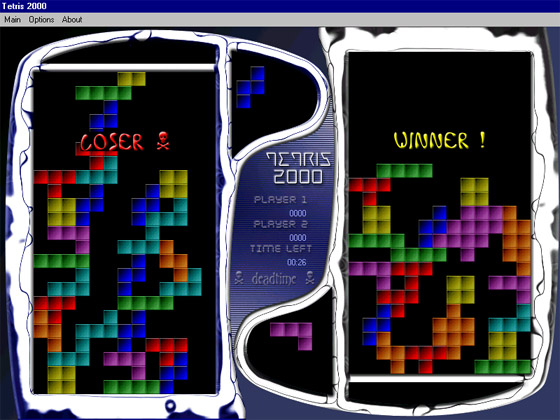
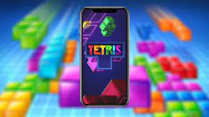
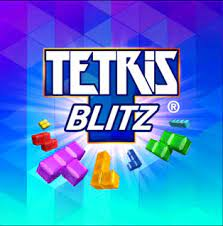
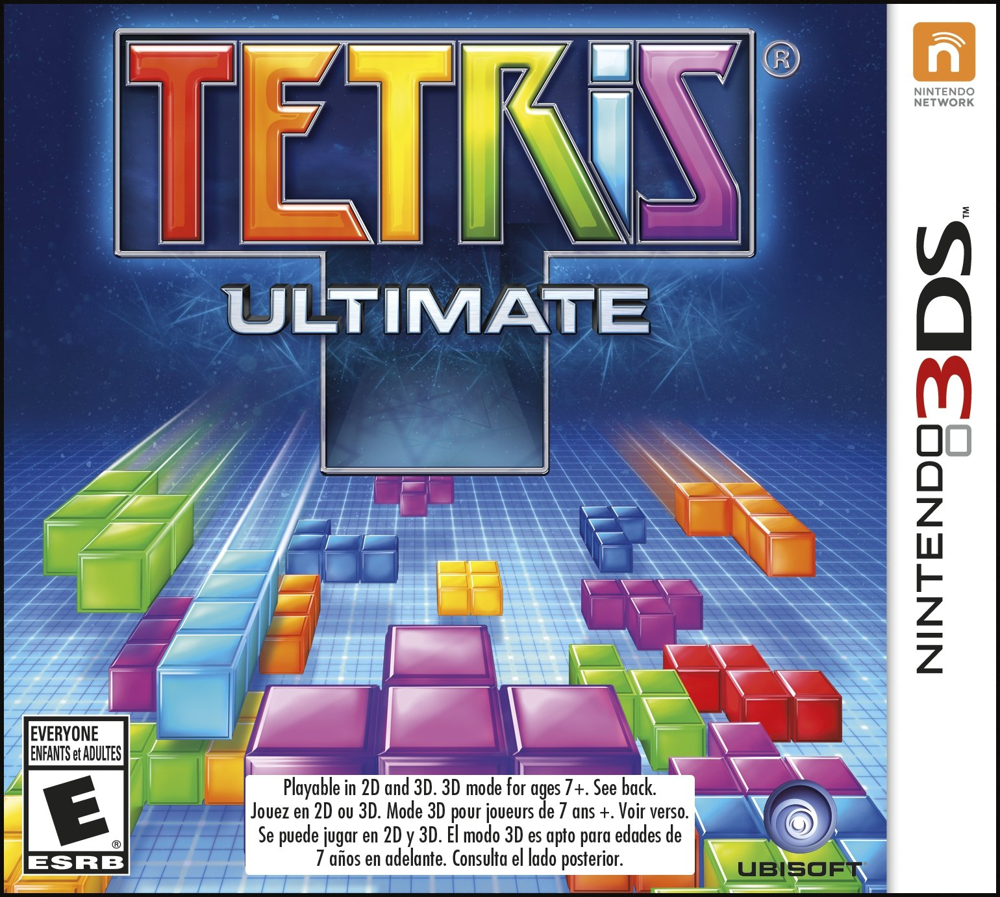
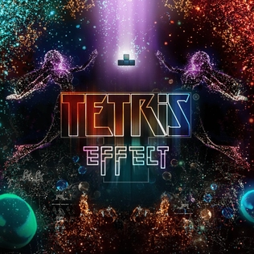
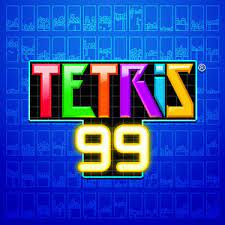

Tetris Evolution Timeline

1984
Creation of the first Tetris by Alexey Pajitnov.

1989
Tetris is released on the Game Boy, expanding its global popularity.

1990
Further expansion of Tetris with enhanced graphics and gameplay on new platforms.

2000
Introduction of multiplayer modes and online rankings in Tetris games.

2010
Release of Tetris on smartphones, bringing the game to millions more worldwide.

2013
Launch of Tetris Blitz, a mobile version with a two-minute sprint mode to achieve maximum points.

2016
Tetris Ultimate, a version that offers six modes of play, was released for multiple platforms.

2018
Tetris Effect, a unique and immersive version with VR capabilities, was launched.

2019
Tetris 99 was introduced, bringing battle royale elements to the classic game.